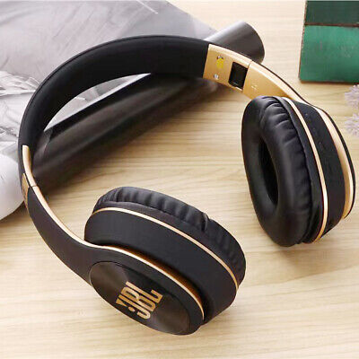

WIRELSS
Advantages of wireless networking:
Wireless Headphones is freedom at its best. It gives you the ability to be cord-free and hands-free giving you the ultimate mobility! Now you don’t have to worry anymore about the ear buds falling off your ears every time the cable comes into contact with your clothes or if you accidentally touch the cable while going about doing your work. Wireless means no more cable which in turn means no more worrying! Whether you are listening to music while working out, doing household chores, walking down the street or trekking, the wireless headphone get the job done easily.

SHOP NOW
Features of this Headphone:
Beast Signature Sound

-40mm drivers and a sound signature that can be found in the most famous venues all around the world.
Keep the noise out, or in. You choose.
-Keep the noise away and stay focused on the music with Adaptive Noise Cancelling. The Ambient Aware technology allows you to safely walk busy streets by increasing ambient sounds, while with TalkThru music is lowered and speech is amplified so you can easily chat keeping your headphones on.